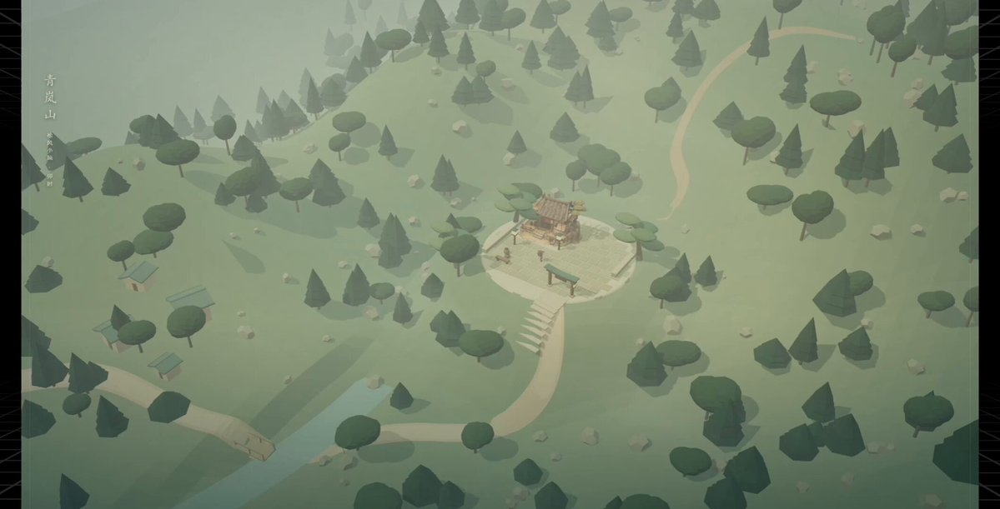
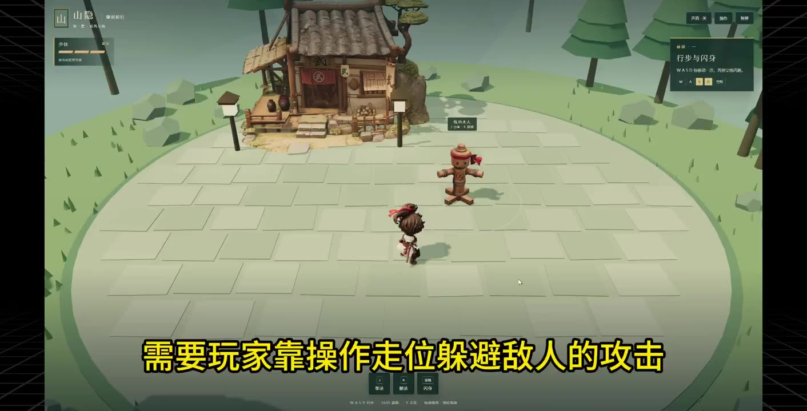
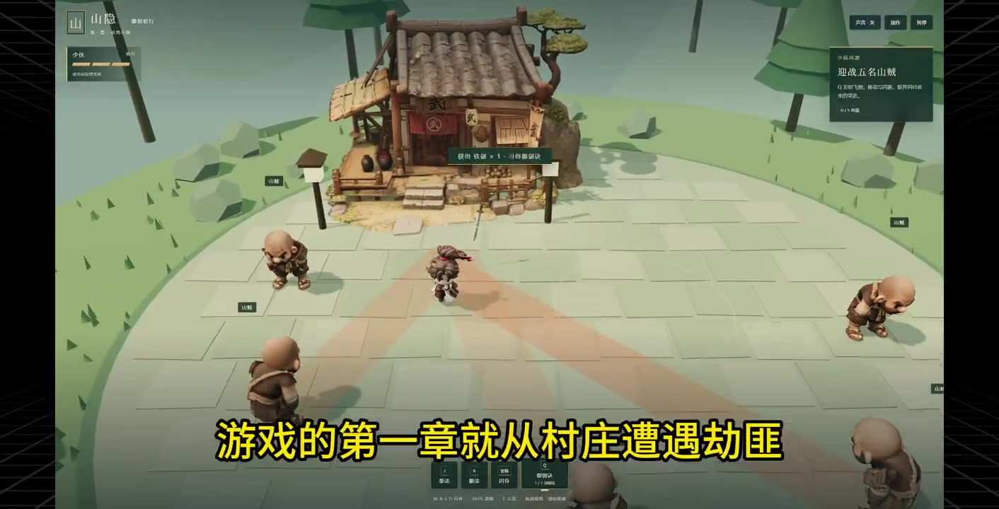
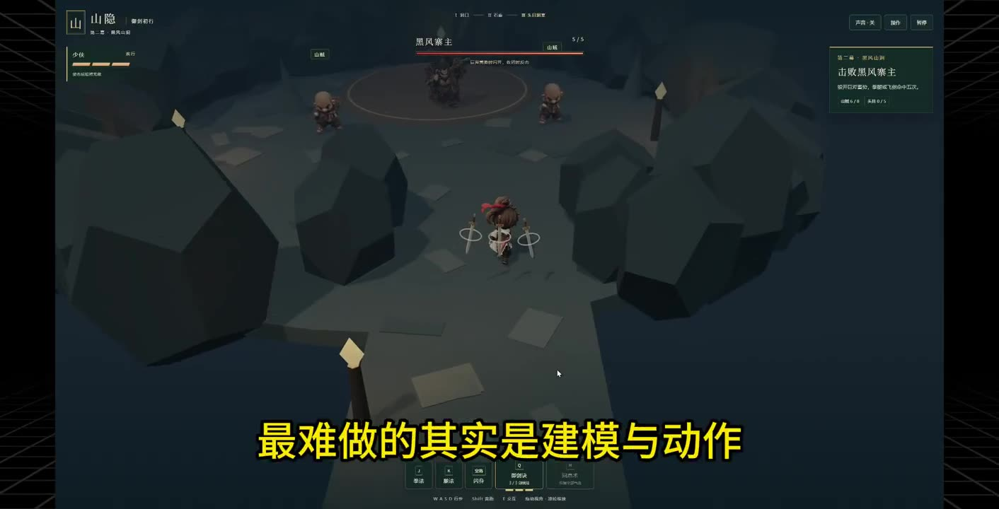
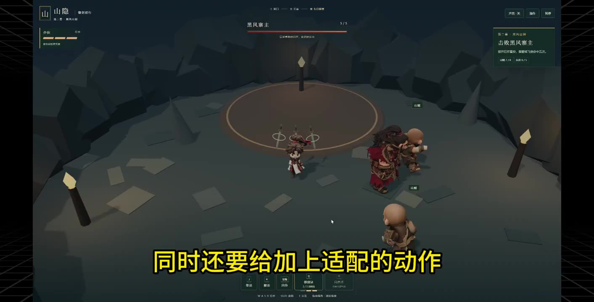
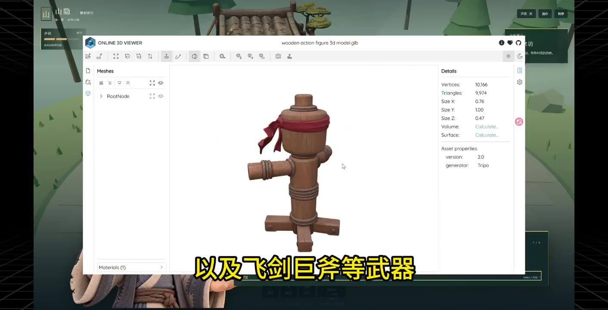
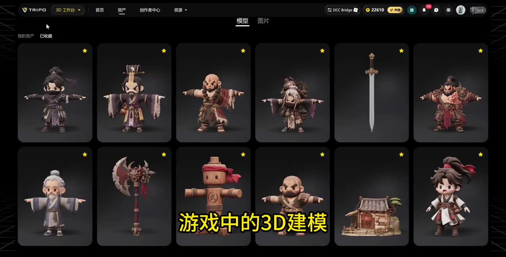
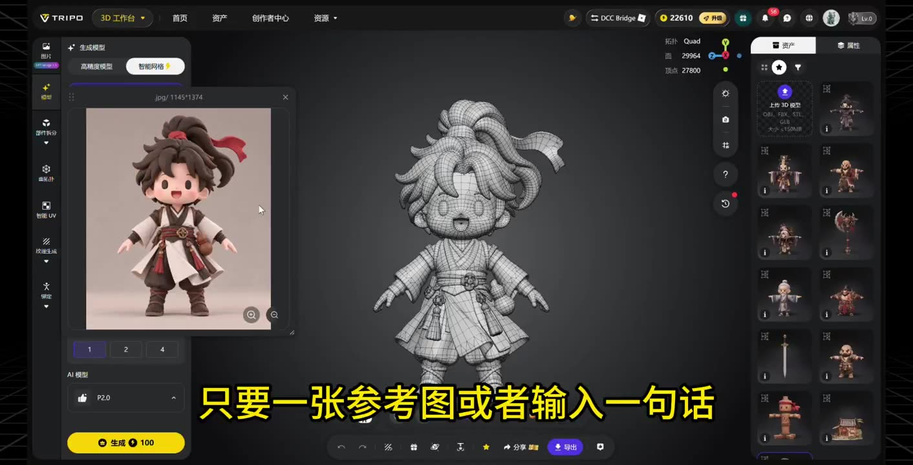
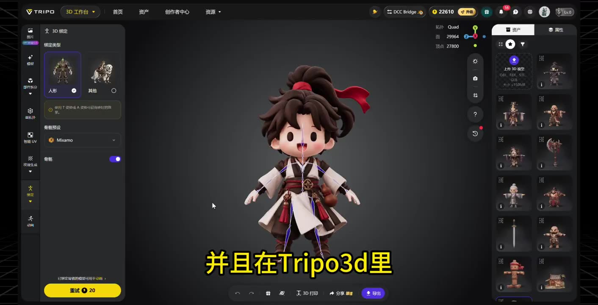
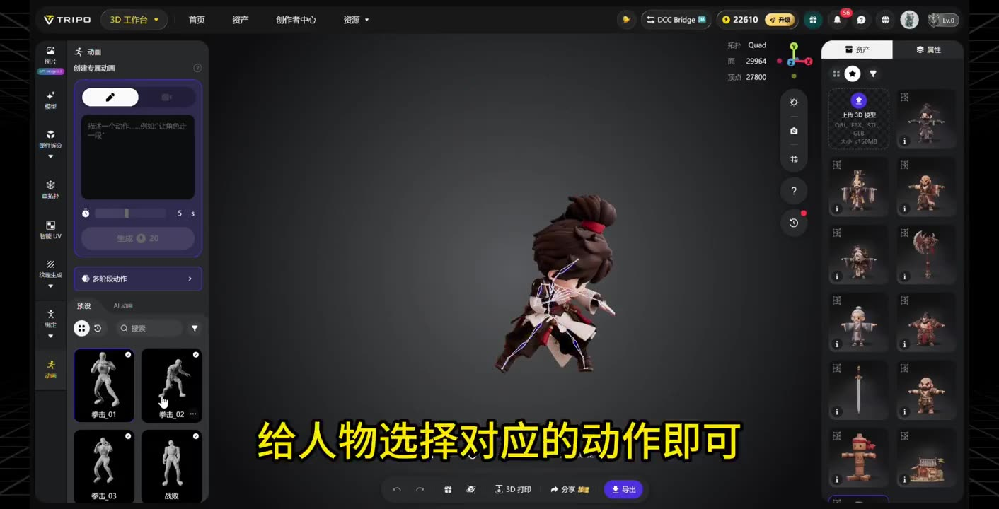

缘起：3D 游戏真的有市场
兄弟们，做 3D 游戏真的有市场啊，而且真能挣钱啊~
最近做的 3D 版大富翁那条视频火了，好多私信问我怎么做的，还有付费要买游戏的🤣🤣🤣
所以趁着假期，我搞了个类似《黑神话：悟空》的 3D 武侠 ARPG，准备发到小红书，看能不能卖掉~
整个过程比我想的复杂，遇到了很多坑~ 所以我把制作过程分享出来，避免大家踩坑，建议收藏~
踩坑：静态好看，一动就崩
开始设定的场景很简单：一个武侠人物在小院练功、山贼围攻、飞剑御敌，再深入山洞跟拿巨斧的头目打一架。
我以为很简单，但说实话，我还是高估了自己，光找合适的建模方案就花了 2 天。
搞过 3D 游戏的都知道，静态角色和动态完全是两码事，静态预览再精致，人物一动就崩了~
AI 建模工具生成的模型，拓扑布线太乱，绑定骨骼后直接废了。
我尝试了好几个建模工具，静态模型效果都挺好，可一绑定动作就暴露问题：角色抬腿时，大腿网格被拉扯成三角形；出拳时，手臂扭曲变形。
解法：Tripo Smart Mesh P2.0 + Claude Opus 5.5
后来无意发现 Tripo 的 Smart Mesh P2.0 能直接生成原生四边形拓扑，不需要人工重拓扑，配合 UV 展开、自动绑骨骼和预设动画，做出来的角色终于能丝滑地做动作了。
建模问题解决后，我用 Claude Opus 5.5 完成了剩余部分，同时调整操作和设计玩法。
制作过程四步
整个游戏的制作过程我也分享给大家，分为四步：
第一步：先设定好游戏规则，列出场景的素材清单
人物、建筑、武器和半身立绘保持统一风格，基础操作、技能和装备系统也提前告诉 AI，让它规划代码，省得后面加东西又得大改。
第二步：用 Tripo 制作资产，再交给 Claude 接入游戏
角色绑定骨骼、选好动作后，导出 GLB 文件，让 Claude + Three.js 加载到网页，并把动画绑定到操作上。
素材交付时说明每个模型的用途和动作对应关系，AI 会更容易准确接入。
第三步：通过试玩优化操作和战斗
玩的时候发现问题，尽量说具体点。
比如「攻击结束后恢复移动太慢」，就比一句「手感不好」好多了。
第四步：往游戏里加新东西，让玩家有得玩
基础操作做顺了，就可以加入技能、新场景和不同的敌人。
比如从拳脚到御剑，再去山洞挑战巨斧头目，让玩家一路有新东西可学、有新挑战可打。
后面也可以扩展其他法术、不同职业，或者加入钓鱼这样的生活玩法。
已有的模型和代码能复用就复用，先挑一个最想玩的做好，再继续往里加。
如果感兴趣，我后面再把模型制作、动作绑定的坑单独拆成一篇详细教程。
具体视频演示👇
视频演示：关键帧与旁白字幕
原视频 59.5 秒（2120×1080），前半段为游戏实机画面，后半段为 Tripo 内建模、绑骨与选动作的录屏。









旁白字幕（按画面整理）
- 这是我一个人用 AI 做的 3D 武侠 ARPG 类的游戏。
- 战斗机制是实时的，需要玩家靠操作走位躲避敌人的攻击，然后找准时间对敌方发起进攻。
- 游戏的第一章就从村庄遭遇劫匪，到主角去剿灭山匪，跟 boss 决战。
- 像这种实时 ARPG，最难做的其实是建模与动作。
- 一个能动能打的角色，光是可操作的地方就有一堆，同时还要给加上适配的动作，像跑步、翻滚、闪躲、攻击、死亡等，每一个操作背后都绑定了（动作）。
- 而且要把游戏做的精细，还需要更多的建模素材，比如不同场景的造景，以及飞剑巨斧等武器。
- 放以前这得凑齐一个团队，策划、程序、美术一个都不能少，但现在我一个人靠 AI 就做出来了。
- 用到的只是 Opus 5.5 + Tripo3d。
- 游戏中的 3D 建模都是在 Tripo3d 里制作的，只要一张参考图或者输入一句话，就能生成一个 3D 模型，根据三视图生成纹理。
- 并且在 Tripo3d 里还可以直接给人物角色绑定骨骼，然后根据需要给人物选择对应的动作即可。
- 游戏里看到的每次移动攻击，都是这么完成的。
作者在评论区的补充
以下为作者本人在该帖下的部分回复（截至抓取时，2026-10-08 约 22:30 UTC+8）：
- 被问到难点：「主要建模难」「建模好是关键」「是的，我就建模弄了半天，太心累了」。
- 被问到在 Tripo 上要花多少钱：「可以先用送的积分体验下，好的话有个 6 折优惠码」。
- 被问到烧了多少 token：「几个亿吧🤣」。
- 发布渠道：「我准备发小红书了」「我发了抖音不知道有没有流量」。
- 对行业：「门槛低了很多」「4399 很多游戏感觉现在都能复刻了」。